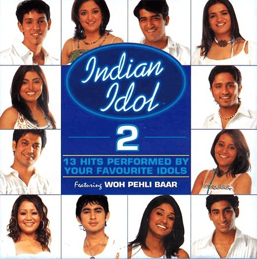
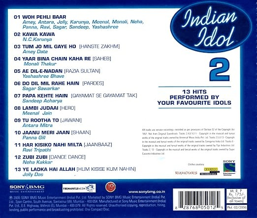

YASHASHREE BHAVE’S INDIAN IDOL SEASON 2 JOURNEY & MILESTONES
From standing in a grueling 24-hour audition line alongside over 50,000 aspirants to conquering theater eliminations and moving the national audience as a Top 11 Gala Finalist on Sony Entertainment Television, discover the career-defining journey of Yashashree Bhave on Indian Idol Season 2[cite: 28].
The Inspiring Audition Story
-
The Call for MumbaiAt the time of registration, Yashashree did not own a home landline. Determined to participate, she shared a friend’s landline number on the entry form. Fortunately, the producers contacted that number to invite her to the Mumbai auditions.[cite: 28]
-
A Grueling 24-Hour QueueArriving in Mumbai alongside more than 50,000 hopefuls from across the globe, she stood in an exhausting audition queue for over 24 continuous hours.[cite: 28]
-
Defying Illness in Front of the JudgesThe prolonged wait and physical toll left her severely ill by the time her name was called. Sensing her weak physical state, judge Sonu Nigam kindly advised her to step aside, rest, and return later.[cite: 28]
-
The Turning Point: "Ruke Ruke Se Kadam"Refusing to lose her moment, Yashashree declined the offer to rest, took the microphone, and delivered a pitch-perfect rendition of Lata Mangeshkar's classic "Ruke Ruke Se Kadam" (Mausam). Stunned by her vocal stability, breath control, and raw determination, the judges unanimously selected her for the next stage, setting her national television journey into motion.[cite: 28]
Theater Elimination Rounds
Yashashree stood out across successive theater eliminations through her authentic classical grounding and vocal precision:[cite: 28]
-
Round 1 "Piya Bawri" (Khubsoorat)Originally sung by Asha Bhosle. The judges praised her rhythmic command and effortless precision through complex, high-velocity sargam passages.[cite: 28]
-
Round 2 "Aisa Lagta Hai Jo Na Hua" (Refugee)Originally sung by Alka Yagnik. Sonu Nigam remarked on how delighted he was to hear her delicate vocal texture on the song, with composer Anu Malik commending her melodic sweetness.[cite: 28]
-
Round 3 "Kehna Hi Kya" (Bombay)Originally sung by K. S. Chithra. Her delivery and subtle classical inflections earned high praise from Sonu Nigam, who noted that her rendition was so authentic it felt as though Chithra herself was singing.[cite: 28]
Piano Round (Top 28) & Gala Rounds (Top 12)
Song: "Aa Hi Jaiye" (Lajja – Anuradha Sriram)
Transitioning away from traditional semi-classical arrangements, Yashashree took on a dramatic, uptempo dance track. Her commanding stage delivery and breath control won strong audience support, advancing her directly into the Top 12 Gala Finalists.[cite: 28]
Song: "Jiya Jale" (Dil Se.. – Lata Mangeshkar)
Demonstrated classical nuance and steady breath control on A. R. Rahman’s intricate composition, drawing strong appreciation and standing praise from the celebrity judging panel.[cite: 28]
Song: "Gori Gori" (Main Hoon Na)
Brought vibrant retro-rock energy to the national television stage with Anu Malik’s lively composition before concluding her competitive journey inside the Top 10.[cite: 28]
Ensemble: "Woh Pehli Baar" Title Anthem
Returned to the grand stage alongside the Top 12 finalists to perform ensemble numbers and the season's signature title anthem before millions of live viewers.[cite: 28]
Official Album Release & Discography

Sony BMG Official CD Front Cover
Yashashree Bhave featured prominently on the front cover of 13 Hits Performed by Your Favourite Idols, presented by Sony BMG Music Entertainment.[cite: 28]

Featured Album Tracklist
- Track 05: "Ae Dil-E-Nadan" (Razia Sultan) – Solo rendition by Yashashree Bhave.[cite: 28]
- Track 01: "Woh Pehli Baar" – Signature season anthem performed with the finalists.[cite: 28]
Audio Vault: Official Studio & Playback Tracks
-
"Ae Dil-E-Nadan" (Sony Music)Featured solo track on the multi-platinum official Sony Music release Indian Idol 2: Woh Pehli Baar (2006).[cite: 28]
-
"Woh Pehli Baar" (Sony Music)Ensemble lead vocalist on the official Sony Music national anthem for Indian Idol Season 2.[cite: 28]
-
"Mai Toh Ho Gai Re Sajna Teri" (Zee Music Company)Solo semi-classical romantic ballad released officially by Zee Music Company.[cite: 28]
-
"Chhoti Si Umar" (Feature Film Playback)Playback track for the social drama Hindi feature film Ek Hakikat Ganga (Zee Music Company).[cite: 28]
-
"Kudi Mai Kaamal Di" (Zee Music Company)High-energy modern pop-dance single featuring Vishu Yadav, released under Zee Music Company.[cite: 28]